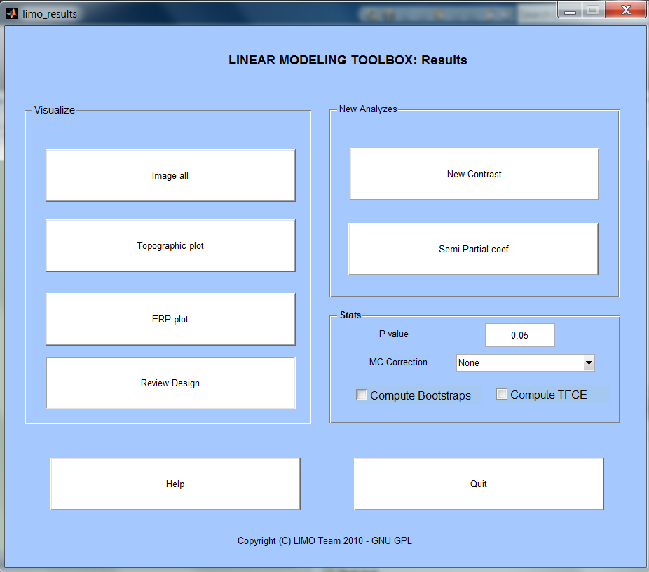
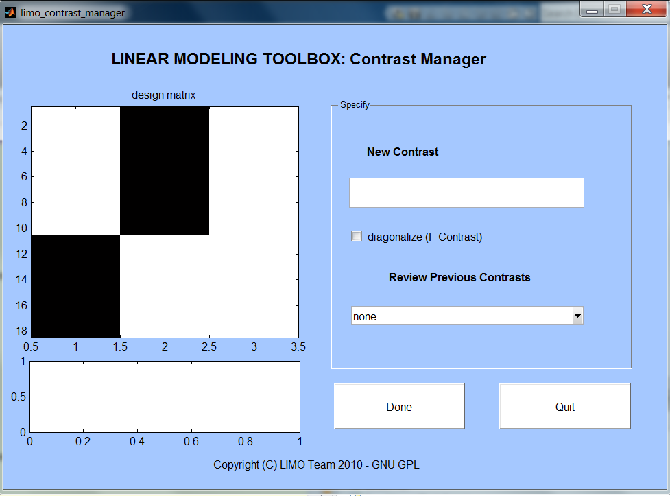

Visualize
Image all allows to plot statistical results in time and for all electrodes.
Topographic plot – using EEGLAB totpoplot function, this allows to visualize statistical results as maps at many time points
ERP plot allows to visualize statistical results in time at a given electrode. Depending on the model (ANOVA, ANCOVA, Regression, t-test) individual variables or results (like e.g. the difference) are plotted. For most design, you have the choise between plotting (i) the original data (ii) the modelled data (that is the result from passing the data through the design matrix) and (iii) the adjusted data (that is the regressor you are looking at minus the effect of the others). Note that in most plots (except 3D ones) confidence intervals and also red dots are plotted at the bottom showing statistically significant time frames and the threshold used depdends on the p value and method indicated in the Stats box.#
Review Design
Simple image the design matrix
Stats
P value: enter here the p value you wish to use
MC Correction: select the method you wish to use to correct for multiple comparisons (None will give you the option to look at thresholded data using standard uncorrected p values)
For further information on MC Correction see our MCC_tutorial power point (and matlab code!) in the help directory
New Analyzes
Semi-partial coef: compute the semi-partial coefficients of correlation of each regressor, i.e. how much variance is explained for a regressor when the others are accounted for ion the data.
New Contrast: by default F values for the main effect of the categorical variable and main effects of the continuous variables were computed. Using contrasts one can also contrast only some columns. For instance with a factorial design A1 A2 B1 B2, the main effect computed is the difference between one of those conditions. However, you may want to look at A > B, in this case create a new contrast 1 1 -1 -1.

Once you click on New Contrast, you have to select a LIMO.mat
file. The design matrix shows up on the left.
Input a new contrast in the 'New Contrast' box and press enter. Any new contrast that you type in will appear in the box below the design matrix to help you visualize which columns you contrast. In the Matlab command window messages are also returned indicating e.g. if your contrast is incorrect or not. Click on the 'diagonalize' box for F contrasts. Click Done to evaluate the contrast. If boostrapped data under H0 were computed, if will also ask if you want to run the contrast under H0.